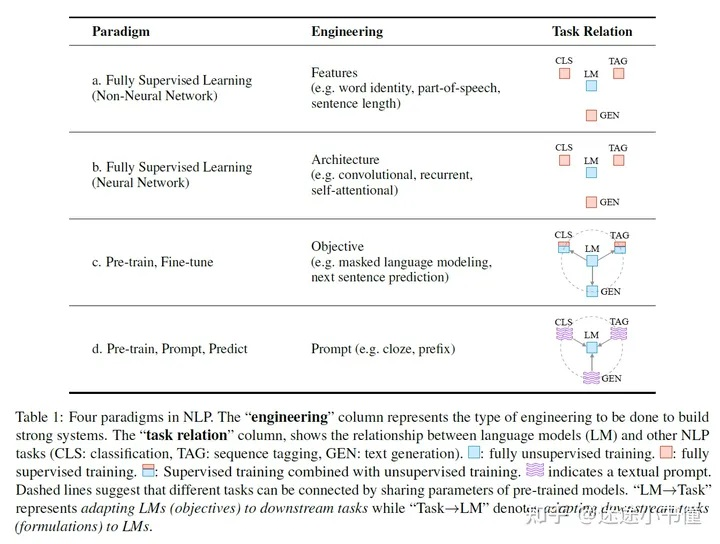
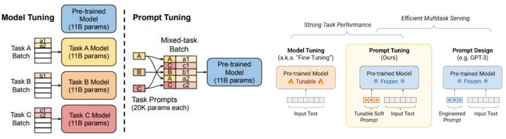

NPL范式 [1] #

Prompt Tuning [2] #
- 🔔 Prompt Tuning
- 🔗 文章：The Power of Scale for Parameter-Efficient Prompt Tuning (EMNLP 2021) https://aclanthology.org/2021.emnlp-main.243/
- 🔑关键词和摘要
- Keywords: Large-scale PLMs, Parameter-efficient Tuning, Prompt Tuning
- 摘要
- Prompt变成可学习的向量，固定PLM，微调Prompt来适配下游任务
- PLM参数规模越大，Prompt Tuning的性能和全参数微调越接近
- 这种基于Soft Prompt的Prompt Tuning方法可以看作是Prefix Tuning的简化版本（只加在输入上）
- ⚙️研究设计和结论
- 方法
- 模型示意图：xxx
- 模型基本思路：
- 经典分类：P(Y | X; θ)
- Hard Prompt: P(Y | [P;X] ; θ)
- Soft Prompt: P(Y | [P;X] ; θ; Δ)
- Hard Prompt: P(Y | [P;X] ; θ)
- Pre-Training
- Fine-Tuning
- Prompt Tuning
- Fine-Tuning
- 经典分类：P(Y | X; θ)
- 实现细节：
- 模型参数量
- 参数量：T5 ~ T5-XXL(10B)
- 预训练：LM Adaptation
- Prompt长度：xxx
- 1、5、20、100、150
- 初始化方法：xxx
- 随机初始化
- 使用预设文本的词向量初始化，类似于设计hard prompt，然后将hard prompt转化为soft prompt
- 使用类别词向量初始化，类似于提供选项
- 模型参数量
- 实验
- 数据集：SuperGLUE
- xxx
- Prompt的规模越大，性能相对而言会越好
- xxx
- 基于语义信息的初始化比随机初始化要好
- xxx
- LM Adaptation 对性能提升显著
- Prompt Tuning还是需要大模型有较好的文本生成能力
- xxx
- 模型参数规模越大，Prompt Tuning效果越好
- 10B参数时与全参数微调性能接近
- 方法
- 📚论文贡献
- 优点（计算友好）
- 大模型的微调新范式
- 一个中心模型服务多个下游任务，节省参数存储量
- 无需优化模型参数，节省优化器的计算量和存储量
- 只在输入层进行操作，适合多任务场景下的计算合并
- 缺点（性能和收敛性存在问题）
- Prompt Tuning的收敛速度很慢
- Prompt Tuning的模型性能不稳定
- Few-shot场景上表现不佳
- 优点（计算友好）
Prompt Tuning[3] #

- Allow an additional k tunable tokens per downstream task to be prepended to the input text
- No intermediate-layer prefixes or task-specific output layers
- Freeze the entire pre-trained model and only optimize the embedding layer
参考 #
-
第七课：Prompt Tuning *** V 有ppt
1xx. 近代自然语言处理技术发展的“第四范式” Prompt Learning
1xx. Prompt范式的缘起｜Pattern-Exploiting Training
1xx. Prompt范式第二阶段｜Prefix-tuning、P-tuning、Prompt-tuning